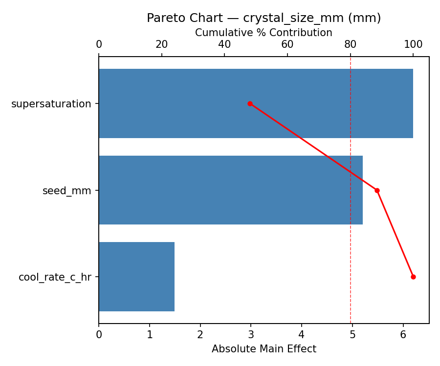
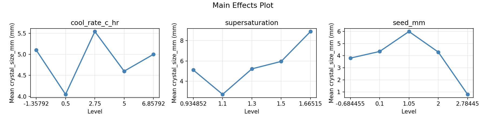
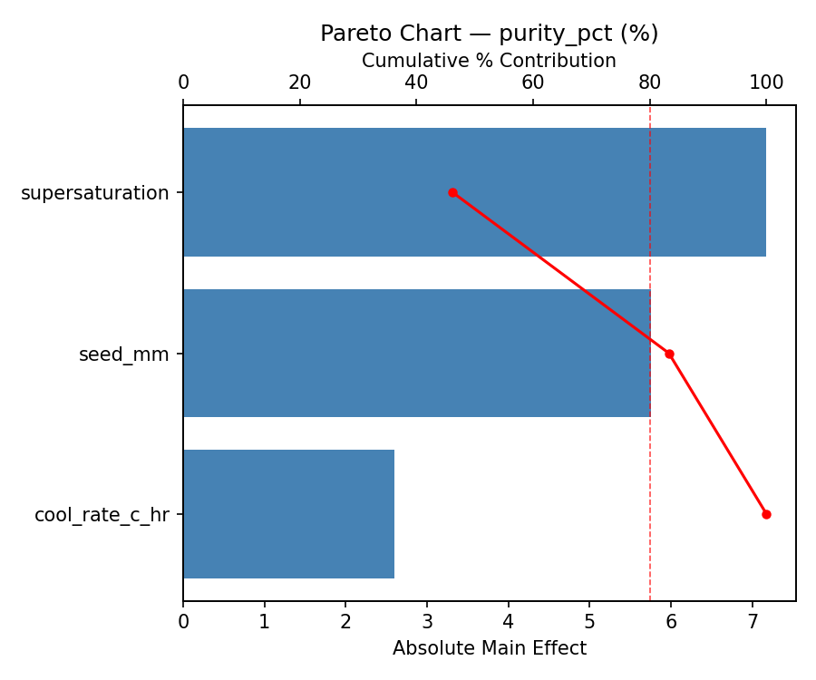
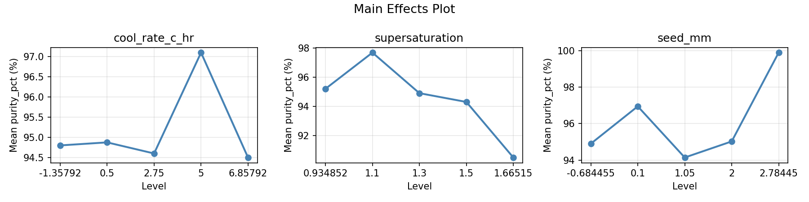
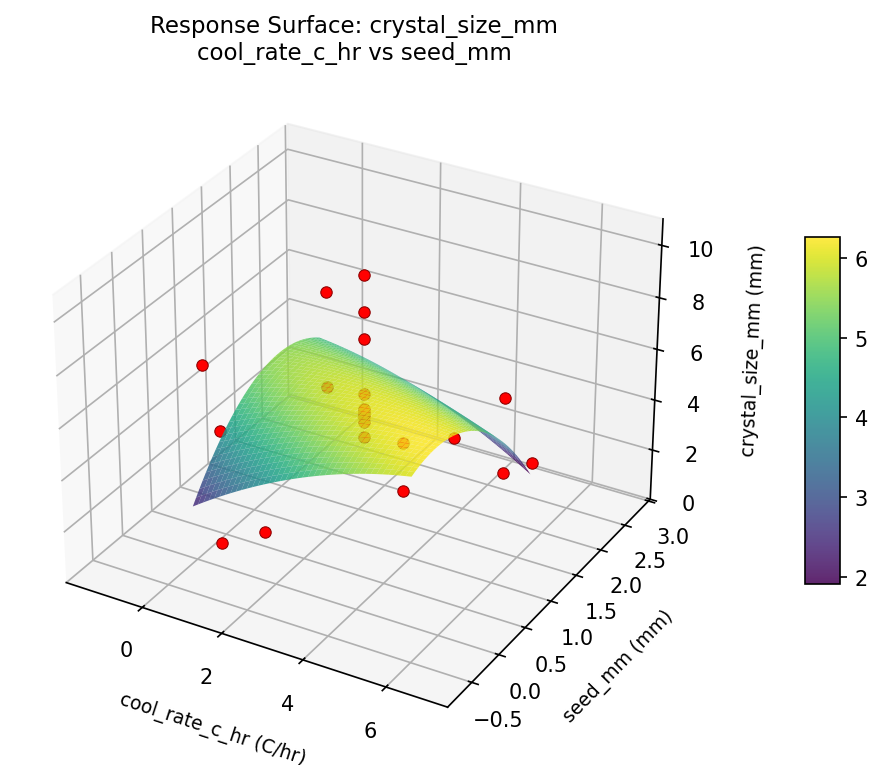
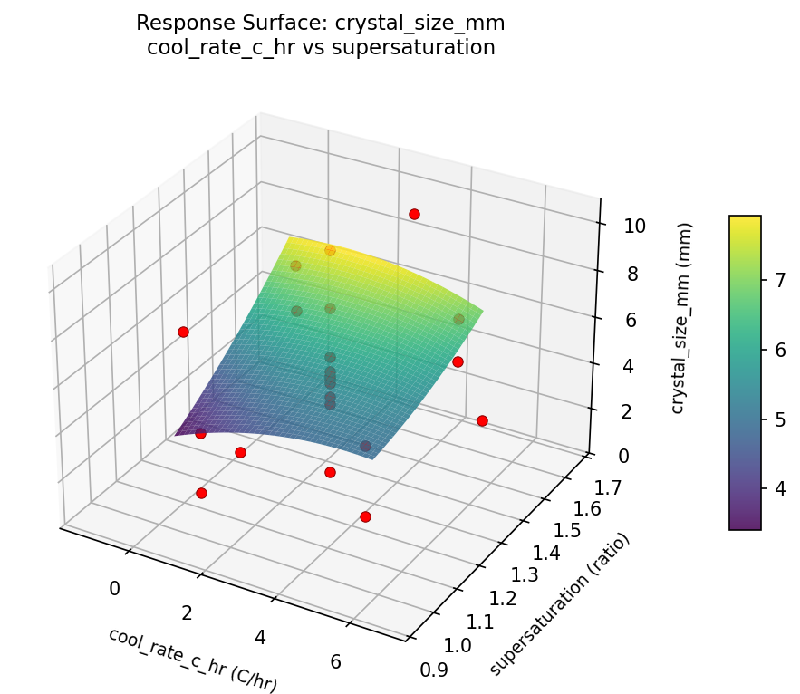
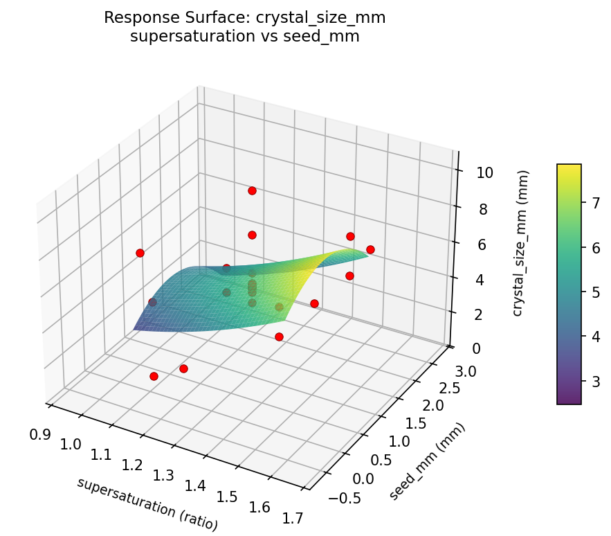
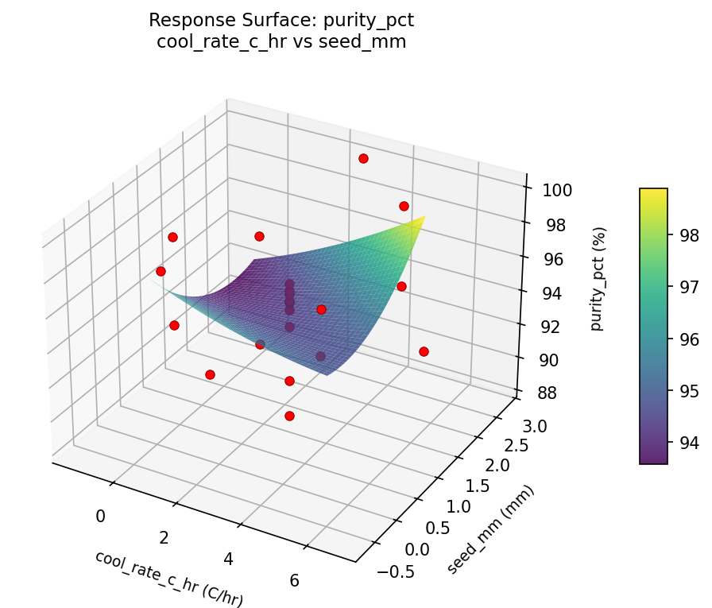
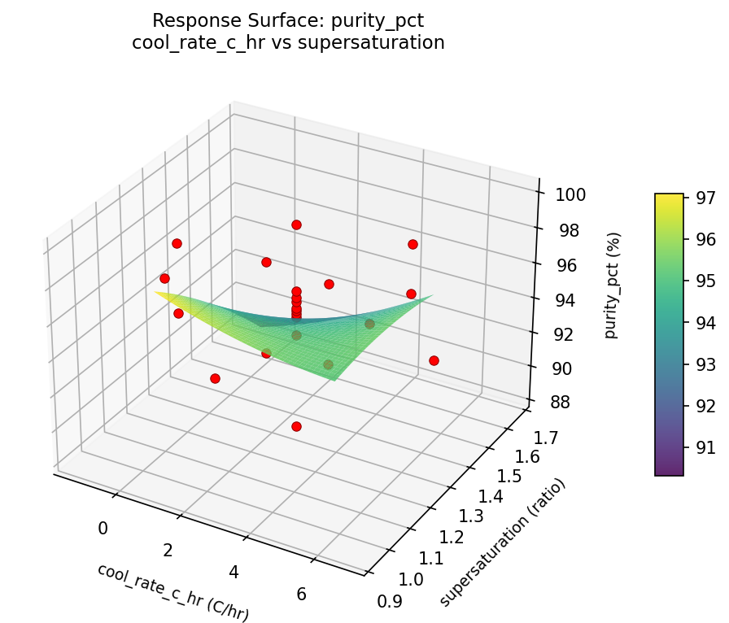
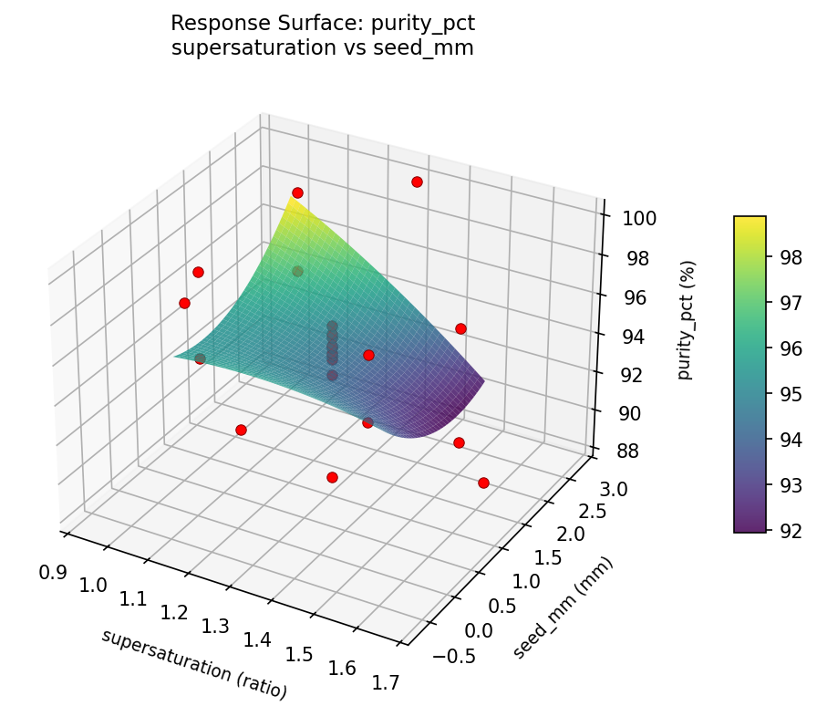

Summary
This experiment investigates crystal growth optimization. Central composite design to maximize crystal size and purity by tuning cooling rate, supersaturation, and seed crystal size.
The design varies 3 factors: cool rate c hr (C/hr), ranging from 0.5 to 5.0, supersaturation (ratio), ranging from 1.1 to 1.5, and seed mm (mm), ranging from 0.1 to 2.0. The goal is to optimize 2 responses: crystal size mm (mm) (maximize) and purity pct (%) (maximize). Fixed conditions held constant across all runs include solvent = water, compound = copper_sulfate.
A Central Composite Design (CCD) was selected to fit a full quadratic response surface model, including curvature and interaction effects. With 3 factors this produces 22 runs including center points and axial (star) points that extend beyond the factorial range.
Quadratic response surface models were fitted to capture potential curvature and factor interactions. The RSM contour plots below visualize how pairs of factors jointly affect each response.
Key Findings
For crystal size mm, the most influential factors were supersaturation (48.1%), seed mm (40.3%), cool rate c hr (11.6%). The best observed value was 10.3 (at cool rate c hr = 2.75, supersaturation = 1.3, seed mm = 1.05).
For purity pct, the most influential factors were supersaturation (46.2%), seed mm (37.1%), cool rate c hr (16.7%). The best observed value was 99.9 (at cool rate c hr = 5, supersaturation = 1.5, seed mm = 2).
Recommended Next Steps
- Run confirmation experiments at the predicted optimal settings to validate the model.
- Consider whether any fixed factors should be varied in a future study.
Experimental Setup
Factors
| Factor | Low | High | Unit |
|---|
cool_rate_c_hr | 0.5 | 5.0 | C/hr |
supersaturation | 1.1 | 1.5 | ratio |
seed_mm | 0.1 | 2.0 | mm |
Fixed: solvent = water, compound = copper_sulfate
Responses
| Response | Direction | Unit |
|---|
crystal_size_mm | ↑ maximize | mm |
purity_pct | ↑ maximize | % |
Configuration
{
"metadata": {
"name": "Crystal Growth Optimization",
"description": "Central composite design to maximize crystal size and purity by tuning cooling rate, supersaturation, and seed crystal size"
},
"factors": [
{
"name": "cool_rate_c_hr",
"levels": [
"0.5",
"5.0"
],
"type": "continuous",
"unit": "C/hr"
},
{
"name": "supersaturation",
"levels": [
"1.1",
"1.5"
],
"type": "continuous",
"unit": "ratio"
},
{
"name": "seed_mm",
"levels": [
"0.1",
"2.0"
],
"type": "continuous",
"unit": "mm"
}
],
"fixed_factors": {
"solvent": "water",
"compound": "copper_sulfate"
},
"responses": [
{
"name": "crystal_size_mm",
"optimize": "maximize",
"unit": "mm"
},
{
"name": "purity_pct",
"optimize": "maximize",
"unit": "%"
}
],
"settings": {
"operation": "central_composite",
"test_script": "use_cases/188_crystallization/sim.sh"
}
}
Experimental Matrix
The Central Composite Design produces 22 runs. Each row is one experiment with specific factor settings.
| Run | cool_rate_c_hr | supersaturation | seed_mm |
|---|
| 1 | 2.75 | 1.3 | 1.05 |
| 2 | 5 | 1.1 | 2 |
| 3 | 0.5 | 1.5 | 0.1 |
| 4 | 2.75 | 1.66515 | 1.05 |
| 5 | 2.75 | 1.3 | 1.05 |
| 6 | -1.35792 | 1.3 | 1.05 |
| 7 | 2.75 | 1.3 | -0.684455 |
| 8 | 2.75 | 1.3 | 1.05 |
| 9 | 5 | 1.5 | 0.1 |
| 10 | 6.85792 | 1.3 | 1.05 |
| 11 | 2.75 | 1.3 | 1.05 |
| 12 | 2.75 | 0.934852 | 1.05 |
| 13 | 2.75 | 1.3 | 1.05 |
| 14 | 0.5 | 1.1 | 2 |
| 15 | 2.75 | 1.3 | 1.05 |
| 16 | 5 | 1.1 | 0.1 |
| 17 | 2.75 | 1.3 | 2.78445 |
| 18 | 5 | 1.5 | 2 |
| 19 | 2.75 | 1.3 | 1.05 |
| 20 | 0.5 | 1.1 | 0.1 |
| 21 | 0.5 | 1.5 | 2 |
| 22 | 2.75 | 1.3 | 1.05 |
Step-by-Step Workflow
1
Preview the design
$ python doe.py info --config use_cases/188_crystallization/config.json
2
Generate the runner script
$ python doe.py generate --config use_cases/188_crystallization/config.json \
--output use_cases/188_crystallization/results/run.sh --seed 42
3
Execute the experiments
$ bash use_cases/188_crystallization/results/run.sh
4
Analyze results
$ python doe.py analyze --config use_cases/188_crystallization/config.json
5
Get optimization recommendations
$ python doe.py optimize --config use_cases/188_crystallization/config.json
6
Generate the HTML report
$ python doe.py report --config use_cases/188_crystallization/config.json \
--output use_cases/188_crystallization/results/report.html
Real-World Experiment Workflow
ℹ
Physical Laboratory Experiment? Use the Manual Workflow
Laboratory experiments involve real chemical reactions, biological processes, and analytical instruments. Results must be measured from actual samples. The simulation script above is for demonstration. For your real experiments, use record, status, and export-worksheet.
$ python doe.py export-worksheet --config use_cases/188_crystallization/config.json \
--format csv --output worksheet.csv
$ python doe.py status --config use_cases/188_crystallization/config.json
$ python doe.py record --config use_cases/188_crystallization/config.json --run 1
$ python doe.py analyze --config use_cases/188_crystallization/config.json --partial
$ python doe.py analyze --config use_cases/188_crystallization/config.json
$ python doe.py optimize --config use_cases/188_crystallization/config.json
$ python doe.py report --config use_cases/188_crystallization/config.json \
--output report.html
✔
Works Without a Test Script
The analysis pipeline doesn't care how results were produced. Record your measurements with record, and the full analysis, optimization, and reporting pipeline works identically. Use --partial to get early insights before all runs are complete.
Features Exercised
| Feature | Value |
|---|
| Design type | central_composite |
| Factor types | continuous (all 3) |
| Arg style | double-dash |
| Responses | 2 (crystal_size_mm ↑, purity_pct ↑) |
| Total runs | 22 |
Analysis Results
Generated from actual experiment runs using the DOE Helper Tool.
Response: crystal_size_mm
Top factors: supersaturation (48.1%), seed_mm (40.3%), cool_rate_c_hr (11.6%).
Pareto Chart

Main Effects Plot

Response: purity_pct
Top factors: supersaturation (46.2%), seed_mm (37.1%), cool_rate_c_hr (16.7%).
Pareto Chart

Main Effects Plot

Response Surface Plots
3D surfaces fitted with quadratic RSM. Red dots are observed data points.
crystal size mm cool rate c hr vs seed mm

crystal size mm cool rate c hr vs supersaturation

crystal size mm supersaturation vs seed mm

purity pct cool rate c hr vs seed mm

purity pct cool rate c hr vs supersaturation

purity pct supersaturation vs seed mm

Full Analysis Output
RSM surface: rsm_crystal_size_mm_cool_rate_c_hr_vs_supersaturation.png
RSM surface: rsm_crystal_size_mm_cool_rate_c_hr_vs_seed_mm.png
RSM surface: rsm_crystal_size_mm_supersaturation_vs_seed_mm.png
RSM surface: rsm_purity_pct_cool_rate_c_hr_vs_supersaturation.png
RSM surface: rsm_purity_pct_cool_rate_c_hr_vs_seed_mm.png
RSM surface: rsm_purity_pct_supersaturation_vs_seed_mm.png
=== Main Effects: crystal_size_mm ===
Factor Effect Std Error % Contribution
--------------------------------------------------------------
supersaturation 6.2000 0.4894 48.1%
seed_mm 5.2000 0.4894 40.3%
cool_rate_c_hr 1.4917 0.4894 11.6%
=== Summary Statistics: crystal_size_mm ===
cool_rate_c_hr:
Level N Mean Std Min Max
------------------------------------------------------------
-1.35792 1 5.1000 0.0000 5.1000 5.1000
0.5 4 4.0500 2.7197 0.7000 7.1000
2.75 12 5.5417 2.5022 0.8000 10.3000
5 4 4.6000 1.9900 1.9000 6.7000
6.85792 1 5.0000 0.0000 5.0000 5.0000
supersaturation:
Level N Mean Std Min Max
------------------------------------------------------------
0.934852 1 5.1000 0.0000 5.1000 5.1000
1.1 4 2.7000 1.8111 0.7000 4.9000
1.3 12 5.2167 2.2687 0.8000 10.3000
1.5 4 5.9500 1.1121 4.9000 7.1000
1.66515 1 8.9000 0.0000 8.9000 8.9000
seed_mm:
Level N Mean Std Min Max
------------------------------------------------------------
-0.684455 1 3.8000 0.0000 3.8000 3.8000
0.1 4 4.3500 2.5632 0.7000 6.7000
1.05 12 6.0000 1.9381 4.1000 10.3000
2 4 4.3000 2.2331 1.9000 7.1000
2.78445 1 0.8000 0.0000 0.8000 0.8000
=== Main Effects: purity_pct ===
Factor Effect Std Error % Contribution
--------------------------------------------------------------
supersaturation 7.1750 0.6237 46.2%
seed_mm 5.7583 0.6237 37.1%
cool_rate_c_hr 2.6000 0.6237 16.7%
=== Summary Statistics: purity_pct ===
cool_rate_c_hr:
Level N Mean Std Min Max
------------------------------------------------------------
-1.35792 1 94.8000 0.0000 94.8000 94.8000
0.5 4 94.8750 4.2914 89.3000 99.7000
2.75 12 94.6000 2.8639 88.4000 99.9000
5 4 97.1000 2.2061 95.2000 99.8000
6.85792 1 94.5000 0.0000 94.5000 94.5000
supersaturation:
Level N Mean Std Min Max
------------------------------------------------------------
0.934852 1 95.2000 0.0000 95.2000 95.2000
1.1 4 97.6750 2.4019 95.4000 99.8000
1.3 12 94.9000 2.5588 88.4000 99.9000
1.5 4 94.3000 3.6359 89.3000 98.0000
1.66515 1 90.5000 0.0000 90.5000 90.5000
seed_mm:
Level N Mean Std Min Max
------------------------------------------------------------
-0.684455 1 94.9000 0.0000 94.9000 94.9000
0.1 4 96.9500 2.3188 94.7000 99.7000
1.05 12 94.1417 2.3271 88.4000 96.2000
2 4 95.0250 4.3285 89.3000 99.8000
2.78445 1 99.9000 0.0000 99.9000 99.9000
Pareto chart (crystal_size_mm): use_cases/188_crystallization/results/analysis/pareto_crystal_size_mm.png
Pareto chart (purity_pct): use_cases/188_crystallization/results/analysis/pareto_purity_pct.png
Main effects (crystal_size_mm): use_cases/188_crystallization/results/analysis/main_effects_crystal_size_mm.png
Main effects (purity_pct): use_cases/188_crystallization/results/analysis/main_effects_purity_pct.png
Optimization Recommendations
=== Optimization: crystal_size_mm ===
Direction: maximize
Best observed run: #6
cool_rate_c_hr = 2.75
supersaturation = 1.3
seed_mm = 1.05
Value: 10.3
RSM Model (linear, R² = 0.1106, Adj R² = -0.0376):
Coefficients:
intercept +5.0545
cool_rate_c_hr +0.0175
supersaturation -0.5985
seed_mm -0.6898
RSM Model (quadratic, R² = 0.1874, Adj R² = -0.4220):
Coefficients:
intercept +5.4690
cool_rate_c_hr +0.0175
supersaturation -0.5985
seed_mm -0.6898
cool_rate_c_hr*supersaturation -0.4875
cool_rate_c_hr*seed_mm +0.6625
supersaturation*seed_mm +0.0125
cool_rate_c_hr^2 -0.3572
supersaturation^2 -0.0722
seed_mm^2 -0.1922
Curvature analysis:
cool_rate_c_hr coef=-0.3572 concave (has a maximum)
seed_mm coef=-0.1922 concave (has a maximum)
supersaturation coef=-0.0722 negligible curvature
Notable interactions:
cool_rate_c_hr*seed_mm coef=+0.6625 (synergistic)
cool_rate_c_hr*supersaturation coef=-0.4875 (antagonistic)
Predicted optimum (from linear model):
cool_rate_c_hr = 5
supersaturation = 1.1
seed_mm = 0.1
Predicted value: 6.3603
Model quality: Weak fit — consider adding center points or using a different design.
Factor importance:
1. seed_mm (effect: 2.6, contribution: 41.1%)
2. supersaturation (effect: 2.1, contribution: 33.2%)
3. cool_rate_c_hr (effect: 1.6, contribution: 25.7%)
=== Optimization: purity_pct ===
Direction: maximize
Best observed run: #16
cool_rate_c_hr = 5
supersaturation = 1.5
seed_mm = 2
Value: 99.9
RSM Model (linear, R² = 0.1397, Adj R² = -0.0037):
Coefficients:
intercept +95.1091
cool_rate_c_hr +0.7618
supersaturation -0.0699
seed_mm +1.0613
RSM Model (quadratic, R² = 0.2595, Adj R² = -0.2959):
Coefficients:
intercept +94.2801
cool_rate_c_hr +0.7618
supersaturation -0.0699
seed_mm +1.0613
cool_rate_c_hr*supersaturation +0.4000
cool_rate_c_hr*seed_mm +0.0000
supersaturation*seed_mm -1.1500
cool_rate_c_hr^2 +0.5345
supersaturation^2 +0.4595
seed_mm^2 +0.2495
Curvature analysis:
cool_rate_c_hr coef=+0.5345 convex (has a minimum)
supersaturation coef=+0.4595 convex (has a minimum)
seed_mm coef=+0.2495 convex (has a minimum)
Notable interactions:
supersaturation*seed_mm coef=-1.1500 (antagonistic)
cool_rate_c_hr*supersaturation coef=+0.4000 (synergistic)
Predicted optimum (from linear model):
cool_rate_c_hr = 2.75
supersaturation = 1.3
seed_mm = 2.78445
Predicted value: 97.0467
Model quality: Weak fit — consider adding center points or using a different design.
Factor importance:
1. seed_mm (effect: 3.8, contribution: 48.1%)
2. cool_rate_c_hr (effect: 2.6, contribution: 32.6%)
3. supersaturation (effect: 1.5, contribution: 19.4%)